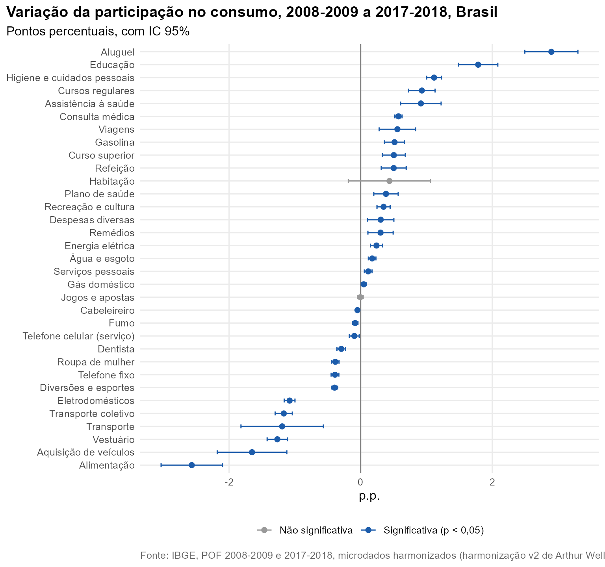
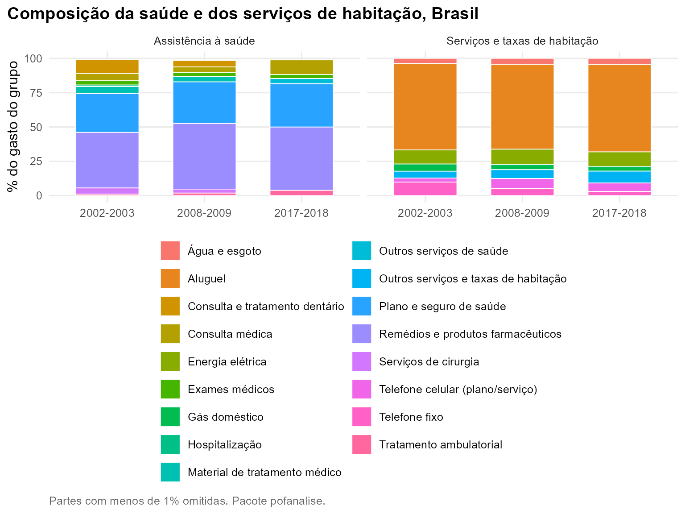

Pergunta. Entre as duas pesquisas mais recentes, quais mudanças no orçamento são estatisticamente significativas?
Método. pof_analisar() em cada edição
(Brasil, consumo completo, IC do desenho amostral) e
pof_variacao() para a diferença entre 2008-2009 e
2017-2018, com IC de 95% e p-valor. Dos 33 itens e grupos testados, 31
têm variação de participação significativa a 5%.
Participação no orçamento
As maiores altas são de aluguel (+2,90 p.p.), educação (+1,79 p.p.), higiene e cuidados pessoais (+1,12 p.p.). A habitação como um todo varia 0,44 p.p. (não significativa). A alimentação cai 2,57 p.p., e o transporte coletivo, 1,17 p.p. O serviço de telefone celular passa de 1,89% para 1,79% do consumo, e o telefone fixo cai 0,39 p.p. Antes das correções da harmonização, o celular parecia quase triplicar, porque em 2008-2009 a v2 deixava cartões e contas de celular em Recreação (ver Erros conhecidos na harmonização).

Quem passou a gastar
A prevalência (proporção de UCs com gasto) mostra mudanças de hábito. As UCs com gasto em transporte coletivo vão de 45,8% para 33,2%; com telefone celular (serviço), de 50,8% para 77,7%; com telefone fixo, de 30,6% para 20,6%.
| Item | 2008-2009 | 2017-2018 | Diferença (p.p.) | IC 95% | p |
|---|---|---|---|---|---|
| Transporte coletivo | 45,8 | 33,2 | -12,6 | -13,7 a -11,4 | < 0,001 |
| Eletrodomésticos | 70,6 | 59,8 | -10,8 | -11,9 a -9,7 | < 0,001 |
| Telefone fixo | 30,6 | 20,6 | -10,0 | -11,1 a -8,9 | < 0,001 |
| Diversões e esportes | 19,4 | 12,3 | -7,1 | -8,0 a -6,2 | < 0,001 |
| Roupa de mulher | 59,7 | 53,6 | -6,2 | -7,2 a -5,1 | < 0,001 |
| Fumo | 21,0 | 15,7 | -5,3 | -6,1 a -4,5 | < 0,001 |
| Aquisição de veículos | 25,4 | 20,7 | -4,7 | -5,6 a -3,8 | < 0,001 |
| Dentista | 4,8 | 0,9 | -3,9 | -4,3 a -3,6 | < 0,001 |
| Cabeleireiro | 81,7 | 78,5 | -3,2 | -4,1 a -2,4 | < 0,001 |
| Viagens | 34,1 | 33,1 | -1,1 | -2,3 a 0,1 | 0,073 |
| Aluguel | 99,3 | 98,5 | -0,9 | -1,0 a -0,7 | < 0,001 |
| Jogos e apostas | 12,9 | 12,5 | -0,4 | -1,1 a 0,4 | 0,318 |
| Gás doméstico | 89,5 | 89,2 | -0,3 | -1,1 a 0,5 | 0,434 |
| Energia elétrica | 91,0 | 92,4 | 1,4 | 0,7 a 2,1 | < 0,001 |
| Plano de saúde | 24,9 | 26,3 | 1,4 | 0,2 a 2,6 | 0,018 |
| Água e esgoto | 66,3 | 69,3 | 3,0 | 1,5 a 4,5 | < 0,001 |
| Curso superior | 5,1 | 8,5 | 3,3 | 2,8 a 3,9 | < 0,001 |
| Cursos regulares | 6,8 | 10,9 | 4,1 | 3,5 a 4,7 | < 0,001 |
| Remédios | 82,8 | 87,4 | 4,5 | 3,8 a 5,3 | < 0,001 |
| Refeição | 47,3 | 52,8 | 5,5 | 4,3 a 6,7 | < 0,001 |
| Gasolina | 28,1 | 36,1 | 8,0 | 7,0 a 9,0 | < 0,001 |
| Consulta médica | 13,1 | 22,4 | 9,4 | 8,6 a 10,2 | < 0,001 |
| Telefone celular (serviço) | 50,8 | 77,7 | 26,9 | 25,7 a 28,1 | < 0,001 |
Dentro da saúde e da habitação
pof_composicao() abre os grupos nas folhas da
harmonização. Na saúde, remédios respondem por 46,2% do gasto em
2017-2018 (47,9% em 2008-2009) e plano de saúde, por 31,6% (30,2%).

Reproduzir
dados <- pof_carregar(c(2008, 2017), dir)
r <- pof_analisar(dados, "f20101", medida = "prevalencia", recorte = "brasil", sem_aluguel = FALSE)
pof_variacao(r, "2008-2009", "2017-2018")
pof_composicao(dados, "22")